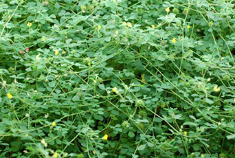

Specie: Medicago truncatula
Taxonomy: Fabaceae; Papilionoideae; 50 kb inversion clade; NPAAA clade; Hologalegina; IRL clade; Trifolieae; Medicago
Abbr: Mtr
Level: Chromosome
chromosome number: 2n=2X=16

Introduction: Medicago truncatula, the barrelclover, strong-spined medick, barrel medic, or barrel medick, is a small annual legume native to the Mediterranean region that is used in genomic research. It is a low-growing, clover-like plant 10–60 centimetres (3.9–23.6 in) tall with trifoliate leaves. Each leaflet is rounded, 1–2 centimetres (0.39–0.79 in) long, often with a dark spot in the center. The flowers are yellow, produced singly or in a small inflorescence of two to five together; the fruit is a small, spiny pod. This species is studied as a model organism for legume biology because it has a small diploid genome, is self-fertile, has a rapid generation time and prolific seed production, is amenable to genetic transformation, and its genome has been sequenced. It forms symbioses with nitrogen-fixing rhizobia (Sinorhizobium meliloti and Sinorhizobium medicae) and arbuscular mycorrhizal fungi including Rhizophagus irregularis (previously known as Glomus intraradices). The model plant Arabidopsis thaliana does not form either symbiosis, making M. truncatula an important tool for studying these processes.
Distribution: Algeria, Baleares, Canary Is., Corse, Cyprus, East Aegean Is., Egypt, France, Greece, Iraq, Italy, Kriti, Krym, Lebanon-Syria, Libya, Madeira, Morocco, Palestine, Portugal, Sardegna, Saudi Arabia, Sicilia, Sinai, Spain, Transcaucasus, Tunisia, Turkey, Turkmenistan, Yugoslavia
Article Title: An improved genome release (version Mt4.0) for the model legume Medicago truncatula
Data source: The Mt4.0 assembly and associated gene models are available in GenBank under accession APNO00000000. The optical maps are available in the Genbank nucleotide database under accessions MAP_000013 to MAP_000020. Supplementary tables are included as an additional file:Additional file 1: Table S1. Available RNA-seq data used in Mt4.0 for UTR and isoform instantiation. Additional file 1: Table S2. Classification of genes into high and low confidence classes.